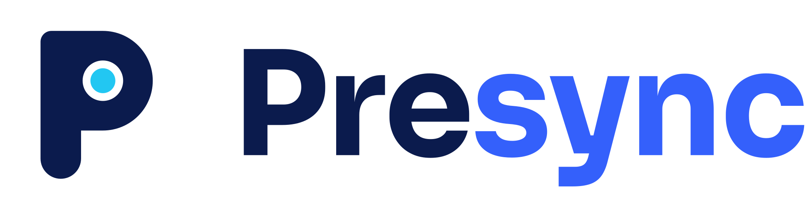
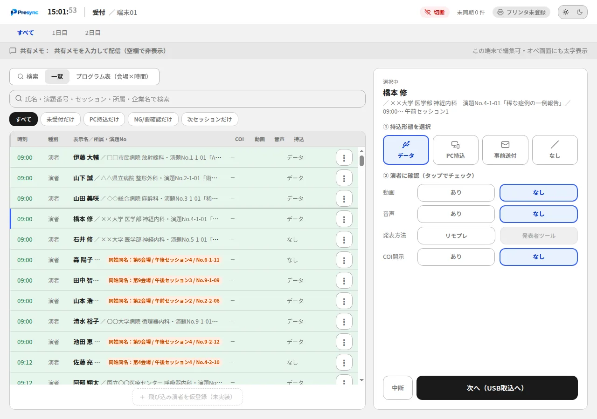
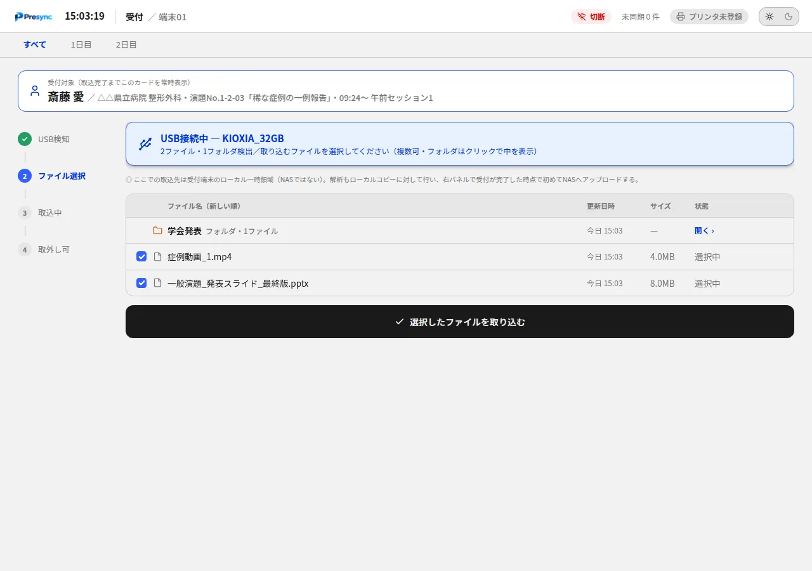
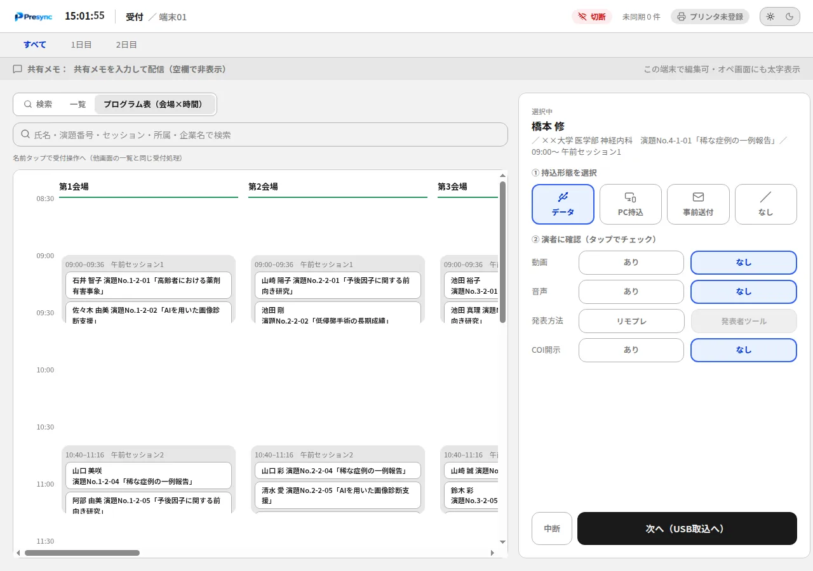
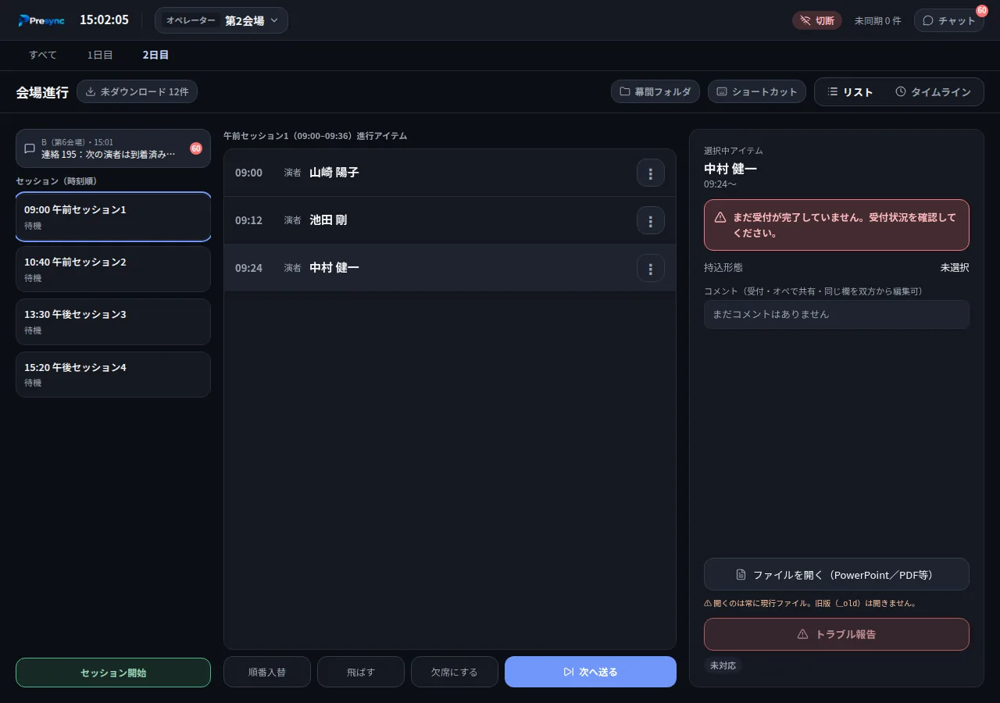
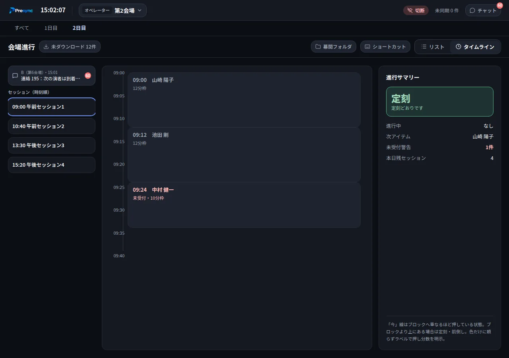
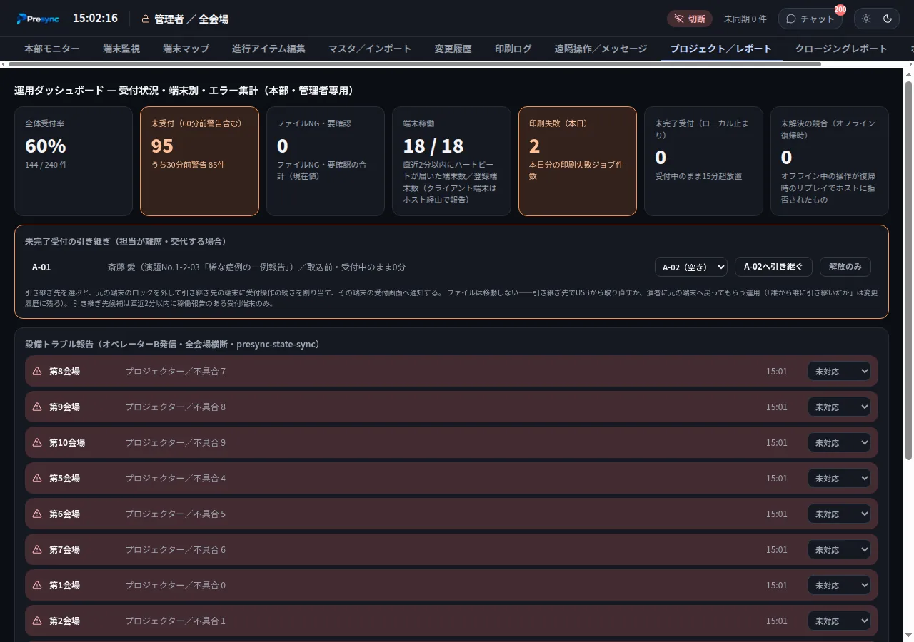
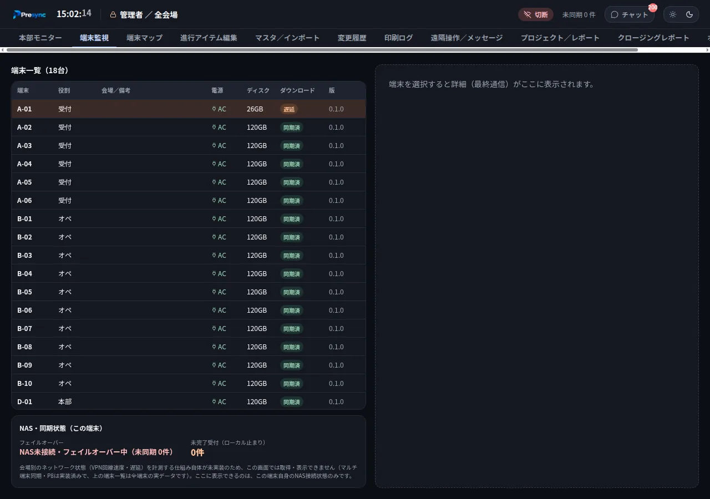
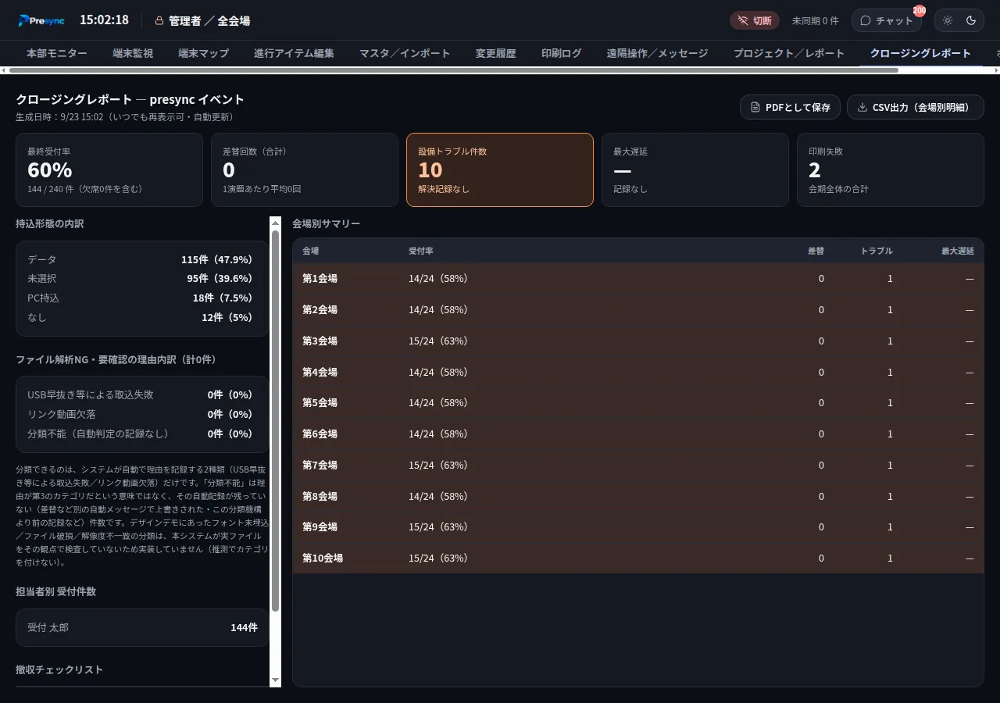

台帳
受付状況が、受付デスクの中にしかない
受付台帳やExcelで管理していると、会場や本部は電話や無線で都度確認するしかありません。

学会・医学系カンファレンス向け PC受付／会場進行システム

台帳
受付台帳やExcelで管理していると、会場や本部は電話や無線で都度確認するしかありません。
ファイル
差し替えた最新版が会場PCに届いているか、投影の直前まで誰も確かめられません。
進行
どの会場が押しているか、どの演者がまだ来ていないかを、一目で把握できません。
障害
NASやサーバー役のPCが落ちると、受付も会場も同時に止まってしまいます。
全端末は会場LANの中でリアルタイムに同期します。インターネット接続は不要です。
A
受付 — 受付デスク
演者の検索、持込形態の確認、USB取込、受付票の印刷。
B
会場オペ — 各会場のPC
自分の会場の進行表。受付済のファイルを開き、「次へ送る」で進行を更新。
C
モニター — 本部・会場入口
全会場の進行と受付率をガントチャートで。会場入口には案内サイネージ。
D
管理者 — 本部
端末の監視、受付の引き継ぎ、プログラム取込、撤収時のレポート。
探して、その場で受付

USB取込

プログラム表
受付デスクの「細かい困りごと」にも
印刷
LAN接続の80mm感熱プリンタへ直接印刷。英語の受付票は演者の言語設定で自動切替。
案内
会場ごとの演台写真と機材を演者に見せて、当日の動きを伝えられます。
差替
差し替え前のファイルは世代ごとに残し、会場では常に最新版だけを開きます。
引き継ぎ
受付の途中で担当が離れても、本部から別のデスクへ引き継げます。
リハーサル
本番データと完全に分けたリハーサル環境。スタッフ研修にそのまま使えます。
連絡
本部から全端末へメモを配信。会場と本部はチャットでやり取りできます。

ファイルの自動配信

タイムライン

全会場を一画面で

端末監視

撤収
あらかじめ指定した共有フォルダへ自動で切り替え、NAS復旧後に再送します。
予備ホストが自動で昇格し、各端末は自動で繋ぎ替わります。
各端末は操作を続け、復旧時に自動で反映します。二重登録はしません。
会場PCのデスクトップにファイルがあるので、アプリ無しでも投影を続けられます。
データベースは30分ごとに自動バックアップ。4台構成での切り替えを自動テストで検証しています。
受付1件ごとに全20端末へ送る量。変わった部分だけを送る方式です。
受付完了や進行更新を、全端末へ配るまでの時間です。
受付一覧で名前の1文字目を入れてから、絞り込み結果が出るまで。
計測条件：20会場×3日×17演題（1,020演題）・端末20台を想定したデータ。開発環境での実測値で、会場LANの通信遅延は含みません。
閉域
データはクラウドへ送りません。インターネット接続なしで動きます。
認証
管理者PINと受付・オペ用パスコード。連続で間違えるとロックします。
記録
変更履歴として、誰が何をしたかを残します。
消去
会場PCに講演データを残したまま返却しません。
警告
OneDrive等でデスクトップが同期されている会場PCには警告を出します。
スマホ
使う場合もアクセスコードが必須。有効にするかは事務局が決められます。
プログラムのCSV／Excel取込、端末・プリンタ・NASの設定、訓練モードでのリハーサル。
受付、会場PCへの自動配信、会場での進行、本部での監視までを同時に回します。
クロージングレポートの出力と、会場PCの投影データ消去。
SEVENTHWELLが、設定から当日の運用まで支援します。
必要な機材と環境 — 市販のPCと会場LANで動きます
| 機材 | 台数 | 備考 |
|---|---|---|
| 受付PC | 受付デスクの数 | Windows 10／11 |
| 会場PC | 各会場に1台 | 投影用PCと兼用できます |
| 本部PC | 1台〜 | 全体をまとめるホスト役を兼ねられます |
| 予備ホストPC | 1台（任意） | ホスト役が止まったときに自動で引き継ぎます |
| NAS | 1台 | 講演ファイルの保存先（共有フォルダでも可） |
| 受付票プリンタ | 受付デスクの数 | LAN接続の80mm感熱プリンタ（USB専用機は不可） |
| ネットワーク | 会場LAN | 有線推奨。インターネット接続は不要 |
機材一式のレンタルにも対応。受付PC・会場PC・プリンタ・NAS・ネットワーク機器まで、SEVENTHWELLで一式ご用意できます。
Plan A
Presyncの提供と、事前設定の支援。機材と運用は主催者側でご用意いただきます。
Quote会場数・演題数・日数に応じてお見積もり
Plan B
受付PC・会場PC・プリンタ・NAS・ネットワーク機器を一式でご用意します。
Quote会場数・演題数・日数に応じてお見積もり
Plan C
SEVENTHWELLのスタッフが現地で設営・受付・会場進行・撤収まで対応します。
Quote会場数・演題数・日数に応じてお見積もり